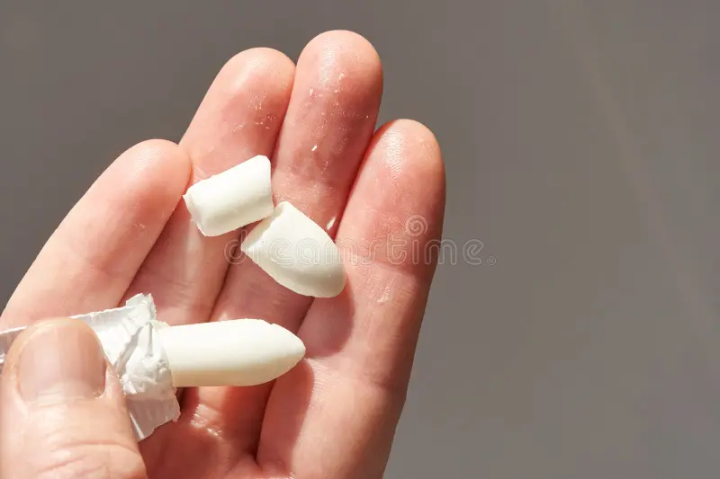
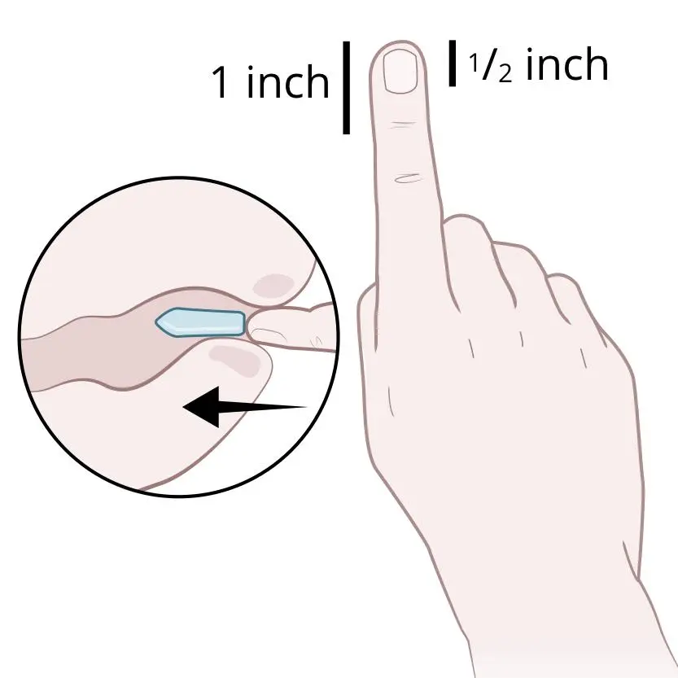
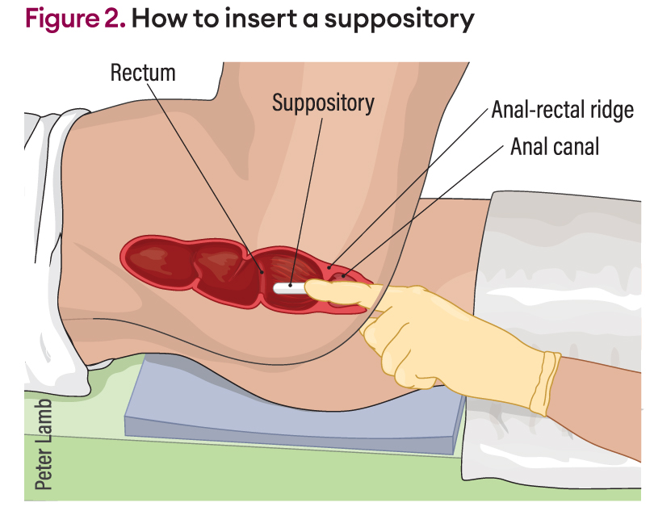

En Fundillito, contamos con una amplia variedad de supositorios para satisfacer las necesidades de todos nuestros visitantes. Ya sea que necesites un supositorio pequeño, mediano o grande, tenemos opciones para cada tamaño y preferencia. Nuestros supositorios están diseñados para brindar comodidad y eficacia, asegurando que cada experiencia sea mejor que la anterior.

Contamos con especialistas con las manos mas capacitadas en el pais garantizando una aplicacion indolora y placentera que sin duda los hara repetir.

Un fundillo feliz es el reflejo de una vida feliz. Lo pequeños detalles son importantes, así como los pequeños fundillitos. Un fundillo es como un cura, el hábito te hara creer, mejorar y crecer. No dejes para mañana un fundillo que puedes cuidar hoy.